Document
Summary
Documents are the main 'page' item for providing site content.
Relevant VLE site design principles
- 3.4 Essential: Site and materials content is accessible.
- 3.6 Essential: Links and materials titles describe the destination or content.
- 5.1 Recommended: Ensure that students can see and access module materials and content.
Documents are the best option for providing most site materials. They use content blocks and a flexible drag-and-drop layout to easily add a wide range of materials.
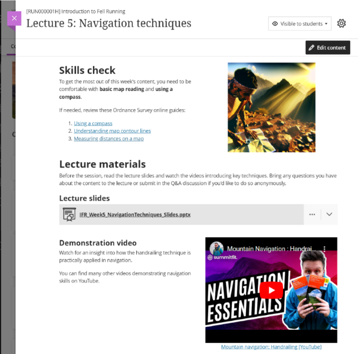
Create a Document
- Hover where the Document should appear. Click the plus icon then Create.
- Under Course Content Items, select Document.
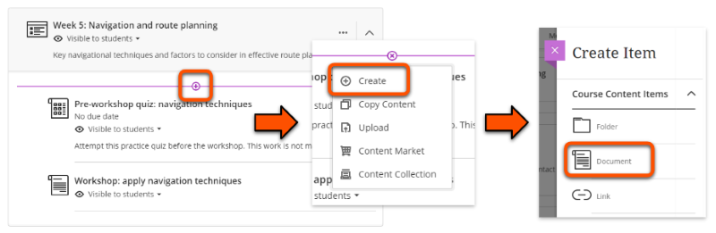
- Enter a descriptive title for the Document (eg. Lecture 5: navigation techniques) and set the item visibility.
- Optionally, click the cog icon and add a brief description to display below the Document title in the Course Content area. Click Save.
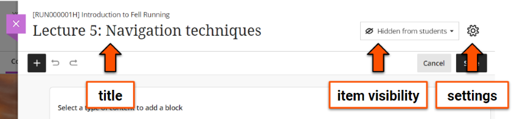
Accessibility checker
The Ally accessibility checker automatically provides an accessibility score and feedback for Document content added using the Content, File and Image blocks. Use this to identify and fix any accessibility issues in your content.
In edit mode, click the Accessibility score icon to open the accessibility feedback:
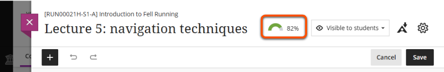
Content blocks
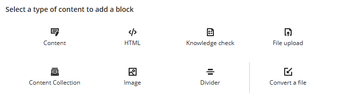
Documents are built from drag-and-drop content blocks. Add blocks using these methods:
- Hover to add: hover in the location to add, then click the small plus icon and select the block needed. A block can be added before or after any existing row.
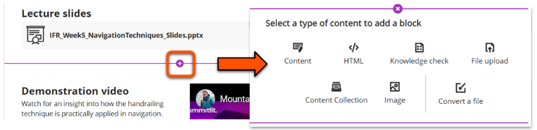
- Block left panel: click the boxed plus icon in the top left, and select the block needed. The block is added after the last existing row.
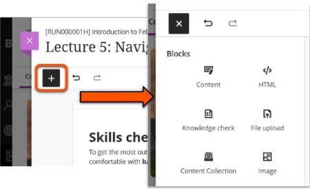
Block: Content (text editor)
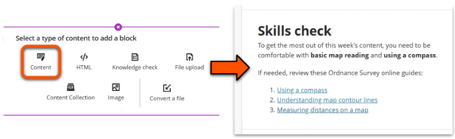
Use this block to add text-based content and YouTube videos via the text editor.
Add text-based content
Relevant VLE site design principles
- 3.4 Essential: Site and materials content is accessible.
- 3.6 Essential: Links and materials titles describe the destination or content.
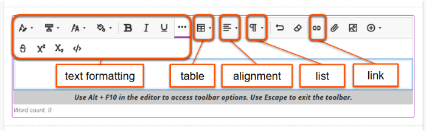
General text
- Text style: to format headings for readability and assistive technology use. Don't skip heading levels: use Title
<h4>-> Header<h5>-> Subheader<h6>. - Bold: for emphasis within body text
- List: add numbered or bullet lists
For readability and consistency, avoid changing the font, text colour or size.
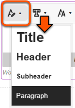
Links
- If you've already added the link text in the text editor, select the text.
- Click the Link icon.
- Enter the destination link URL and descriptive link text (not "click here" or "open link"), then click Insert.
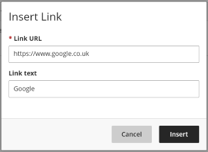
Effective text describes the destination content so that the link makes sense by itself. This is a simple but very effective accessibility consideration, and also makes your text more readable. See our guide to accessible links in Ultra VLE sites for more details.
Code or maths content
- Code snippet: click the three dots icon to open the expanded formatting options, then click the code snippet icon and enter your code.
- Inline LaTeX: enter the LaTeX within double dollar signs and it will render when the text chunk is saved.
- Maths formula: click the plus icon to open the Insert content drop-down menu. Select Math, then construct your formula and click Insert.
Add videos
Relevant VLE site design principles
- 3.5 Essential: Pre-recorded videos are hosted in a streaming service and captioned accurately.
- 3.7 Essential: Direct, descriptive links are given to open embedded content (eg. video or Xerte objects) in full screen.
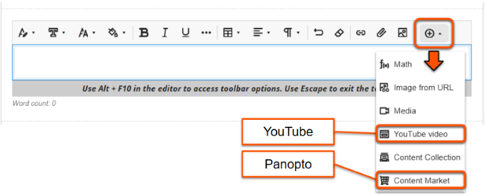
In addition to the text editor methods here, you can also manually embed videos using a HTML block. Do not upload a video file directly to the site.
Youtube
- Click the plus icon to open the Insert content drop-down menu and select YouTube video
- Search for a video title and select the video to embed.
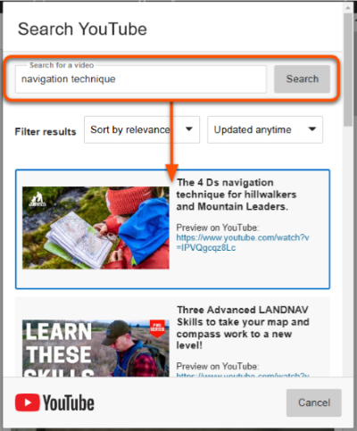
- On the Edit Content Settings panel:
- check and adapt the Alternative Text as needed. By default this is the video title.
- ensure Display Content is set to "The content displays inline if the browser allows. If not allowed, the content displays as a link."
- copy the video URL (for the next step)
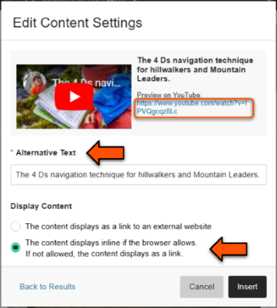
- Click Insert.
- In the text editor, add a link under the video to open it directly in YouTube.
Panopto
- Click the plus icon to open the Insert content drop-down menu and select Content Market.
- Select the Panopto Video option to open the Panopto folder associated with the site.
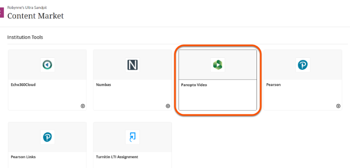
- Select the video to embed. Leave the Video Embed Options as the default settings and click Insert. You can also use the search box in the top left of this window to search for and access an Ongoing Media folder if you have one.
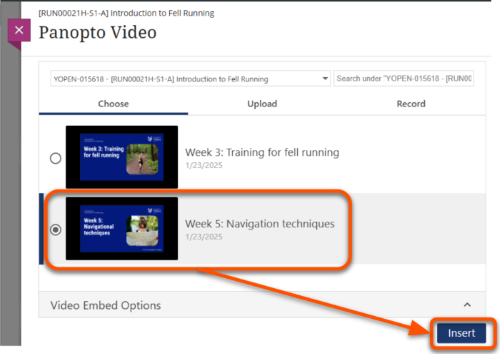
- Check that the Display Name describes the video content and click Insert.
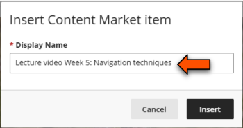
- In the text editor, add a link under the video to open it directly in Panopto.
To add a Panopto video as a separate content item, see our guide to using Panopto recordings in Ultra.
Files & images: use dedicated blocks instead
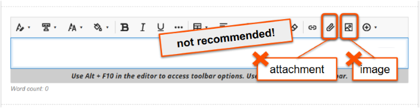
It's technically possible to also upload files and images via the text editor, but we strongly recommend using the dedicated File Upload and Image blocks instead as these are easier to use and give cleaner results.
Block: HTML
Relevant VLE site design principles
- 3.7 Essential: Direct, descriptive links are given to open embedded content (eg. video or Xerte objects) in full screen.
- 5.1 Recommended: Ensure that students can see and access module materials and content.
Warning
The HTML block is only for embedding third-party content. See our Upload HTML guide for other uses.
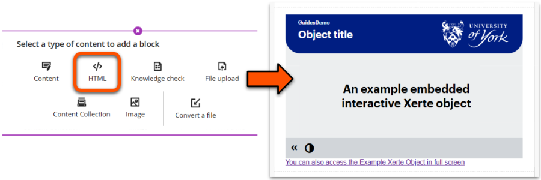
Use the HTML block to embed third-party content, such as interactive Xerte objects or asynchronous Mentimeter surveys. You can also use this block to manually embed Panopto or YouTube.
Make sure that the sharing settings of the third-party object allow your students to view the item.
Embed an object
- Copy the third-party content embed code. It will look something like this:
<iframe src="CONTENT URL HERE" width="802" height="602" frameborder="0" style="position:relative; top:0px; left:0px; z-index:0;"></iframe> - Add a HTML block in the desired location and paste the embed code into the HTML box.
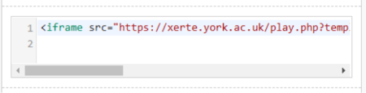
- Optional: embed codes generally include a fixed pixel width. The object might display better if you update this to resize to fill the block instead; within the embed code, scroll to find the width (eg.
width="802") and update towidth="100%".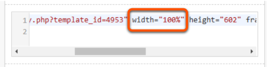
- Add a direct link to open the object in full screen.
- Copy and paste this line into the box below the embed code:
<a href="[PASTE URL HERE]" style="font-family: sans-serif">You can also access [OBJECT NAME] in full screen</a> - Return to the third-party content and copy the URL.
- In the HTML box, replace
[PASTE URL HERE]with your URL, and[OBJECT NAME]to describe the object.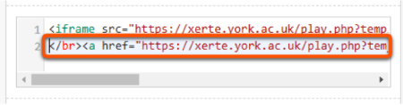
- Copy and paste this line into the box below the embed code:
- When you have finished editing the Document, click Save in the top right.
Block: Knowledge check
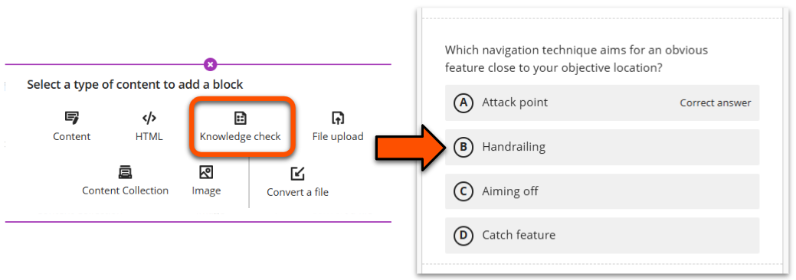
Use this block to add a multiple choice question into the Document so students can check their understanding.
Add a knowledge check question
- In the question entry panel, enter the question text.
- Enter answer options and tick the correct answer(s). Set the order to present options (this is fixed and can't be randomised).
- Optional: enter custom feedback messages.
- Click Save in the question entry panel.
- When you have finished editing the Document, click Save in the top right.
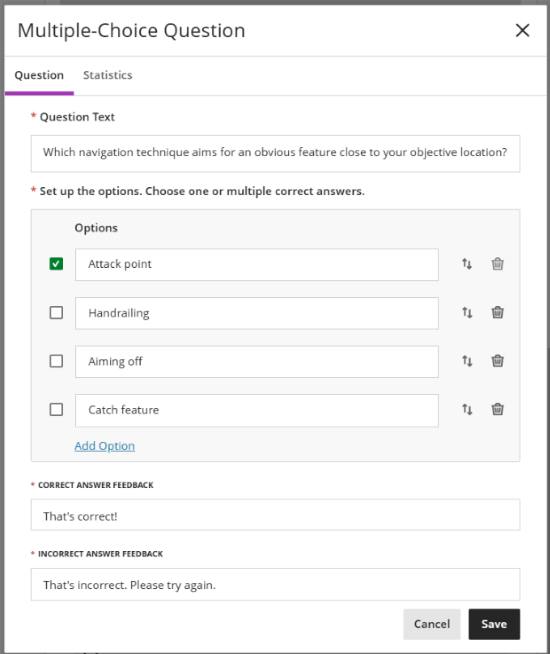
Results are available once students have attempted the knowledge check (this is not visible to students). This is accessible from two locations:
- above the question in Document view mode (ie. Save the Document first)
- on the Statistics tab of the question entry panel
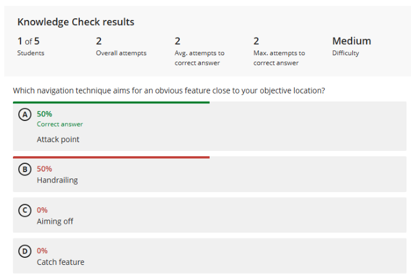
Example: knowledge check multiple choice question
Question input panel Question Text Which navigation technique aims for an obvious feature close to your objective location?
Options:
- Attack point (ticked to show correct answer)
- Handrailing
- Aiming off
- Catch feature
There is also a link to add more options and icons to move or delete each option.
Default feedback text
- Correct answer feedback: That's correct!
- Incorrect answer feedback: That's incorrect. Please try again.
Knowledge check results/Statistics
Contains data about attempts made and answers selected.
- Students (1 of 5)
- Overall attempts (2)
- Average attempts to correct answer (2)
- Maximum attempts to correct answer (2)
- Difficulty rating (Medium)
- Breakdown of options selected by students (correct option 50%, one incorrect option 50%, other two options 0%)
To add more complex knowledge checks or practice quizzes as a separate content item, see our guide to the Test tool.
Block: File upload
Relevant VLE site design principles
- 3.3 Essential: Provide up-to-date documents in an accepted file format.
- 3.6 Essential: Links and materials titles describe the destination or content.
Warning
Do not upload reading items such as journal papers or books etc., as this likely violates accessibility and copyright legislation. Instead, provide all readings via your module Reading List.
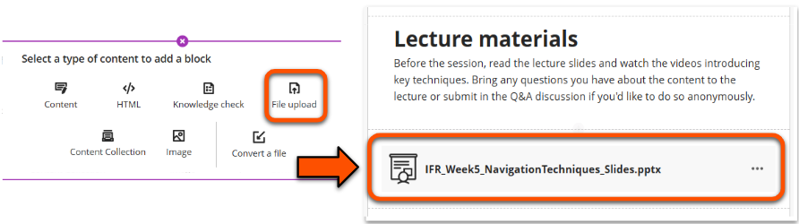
Use this block to add PDF, Word, Powerpoint (etc.) files to your Document. This is especially useful for lecture slides and other files that students will use during weekly teaching.
In Document view mode, users can preview the file directly within the site. They can also download the original file or convert it using the Ally alternative formats generator.
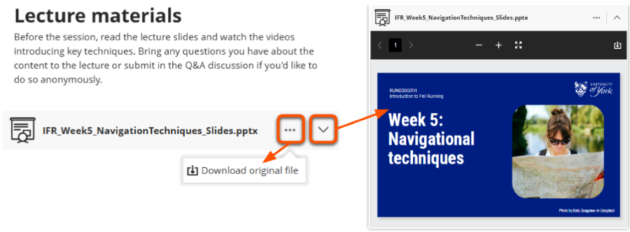
Upload a file
- Select the relevant file from your device.
- In the File Options panel, enter a Display name (title) that meaningfully describes the contents without having to open the file.
- Set File Options to View and download.
- Click Save in the File Options panel.
- When you have finished editing the Document, click Save in the top right.
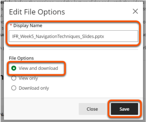
To upload a file as a standalone item in the Course Content area, see our guide to Files.
Block: Content Collection
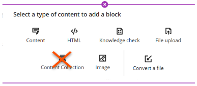
Don't use this block. The Content Collection is a storage method that is not generally used at UoY. You can achieve everything the Content Collection offers by adding content directly to your site.
Block: Image
Relevant VLE site design principles
- 2.3 Essential: Design and images adhere to the UoY Brand.
- 3.4 Essential: Site and materials content is accessible.
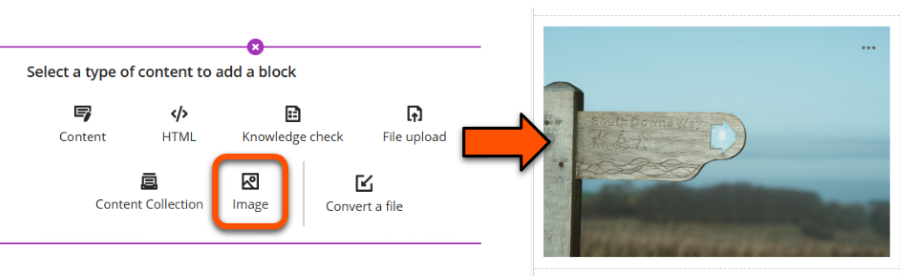
Use this block to upload an image, source an image from Unsplash or generate an image using the AI Design Assistant. It's also possible to add images using the text editor in the content block type, but this is a bit more fiddly and results are not as neat.
Images should be high quality and must comply with copyright regulations. The University’s photo library or Unsplash.com are good sources of appropriate images.
Ensure that images have appropriate ALT text to describe the content, or are marked as decorative if they don't add meaning. You can also add a caption to give further context or comment on the image, but this shouldn't be used in place of ALT text.
For more details, see our general advice on ALT text and advice on describing complex images
Add an image
- Add an Image block, or a Content block and then select the image icon in the text editor. These both open the Insert image panel.
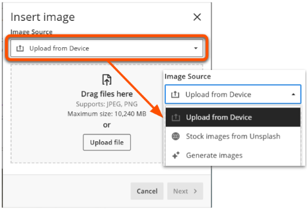
- Choose your image:
- Upload an image: drag a file into the box or click Upload File to manually select a file on your device. The file must be a .jpg or .png and less than 10,240MB. Click Next.
- Unsplash image: open the Image Source menu and select Stock images from Unsplash. This automatically searches based on the Document title, or you can enter your own terms then click Search. Select an image and click Next.
- Generate AI image: open the Image Source menu and select Generate images. This automatically generate images based on the Document title, or you can enter your own terms then click Generate. Select an image and click Next.
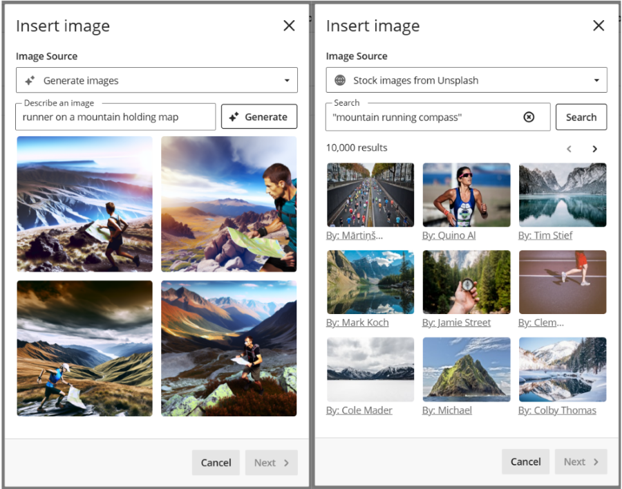
- Select the aspect ratio, reposition and zoom as needed and click Next.
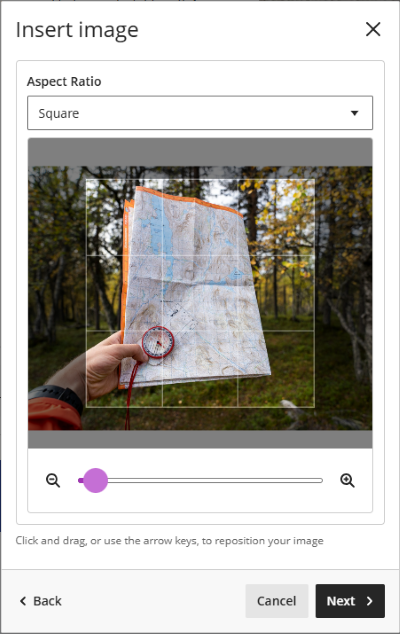
- In the Edit File Options panel, adjust the Display name (ie. file name) as needed. Provide appropriate ALT text or mark the image as decorative. Leave the File Options as View and download. Click Save.
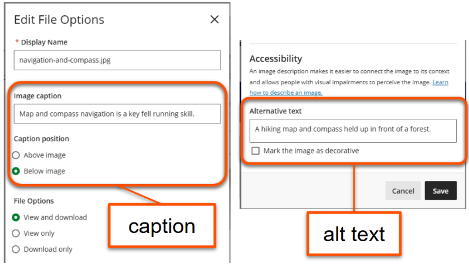
- To edit the image after closing the panel, click the three dots icon in the top right of the image and select Edit image.
- Position the image block as desired on the page.
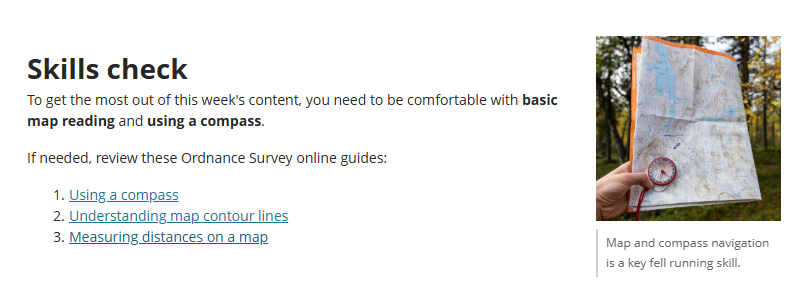
Example: Generated and Unsplash images and file options
Add image option 1. Generate images
- Describe an image: runner on a mountain holding map
- Images generated: four square images in a hyper-realistic style, all clearly AI generated but relevant to the description. Each has a single runner in Lake District-esque mountain terrain holding a map. One runner has an elongated arm and one has a very large map, but all could reasonably be used.
Add image option 2. Stock images from Unsplash
- Search terms: mountain running compass
- Search results: 9 images shown on first page (of 10,000 results). None are particularly relevant to the combined search terms: one shows a compass held up in front of pine trees, five show mountain scenes but no people, and three show other types of runners.
Edit File Options
Inputted content:
- Display name: navigation-and-compass.jpg
- Image caption: Map and compass navigation is a key fell running skill.
- Alternative text: A hiking map and compass held up in front of a forest.
Block: Divider
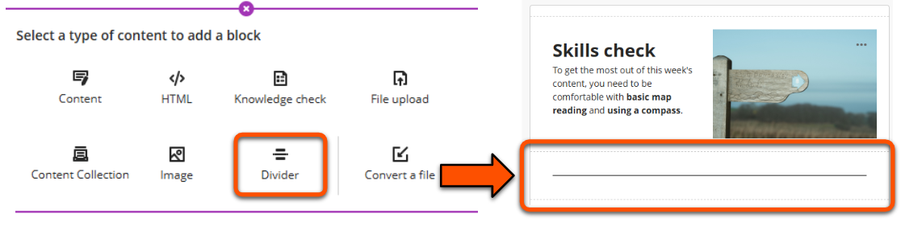
Use this block to add a grey divider between content items. This is resizable in the same way as other items. To add, just click where you want the divider to appear and select Divider.
Block: Convert a File
Using automated tools effectively
This automatic file conversion is a step in content development, not a final product. Careful checking is always needed.
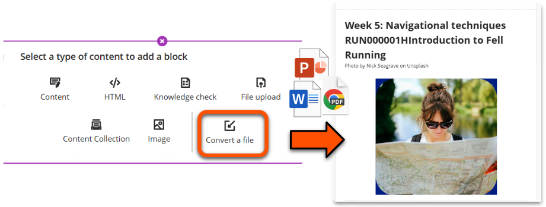
Use this block to convert a PDF, Word or PowerPoint file on your device to include the content directly within a Document. Conversion quality will depend on the type of content in the file. Simple text-based files will be easiest to convert, but more complex formatting and layout may be lost. The automatic AI Design Assistant layout tool may be useful here.
Convert a file
- Use the hover to add method and select the Convert a File block.
- Select the relevant file from your device.
- Wait while the file content is converted. Depending on the size of the file, this could take a few minutes.
- Carefully check and adapt the content and formatting as necessary.
Block style
You can add a coloured icon and border to highlight any block. We recommend that this is used sparingly to maintain impact, and that styles are applied consistently across pages.
- Hover over the relevant block and click the Paint pallette icon.
- Select the desired style option:
- Question: ? icon, blue border
- Tip: light bulb icon, yellow border
- Key points: pin icon, purple border
- Next steps: arrows icon, green border
- Reset styling: remove style
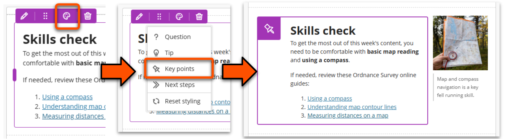
Layout
Content blocks can be arranged in rows up to 4 columns based on 25%, 50% or 75% widths. Each row has its own column layout, giving a lot of flexibility. Rows are responsive to screen size and will wrap on small screens.
For example, a layout for some video resources could use:
- a full-width row with some context on how to use the resources
- a row with two 50% width columns each containing an embedded video
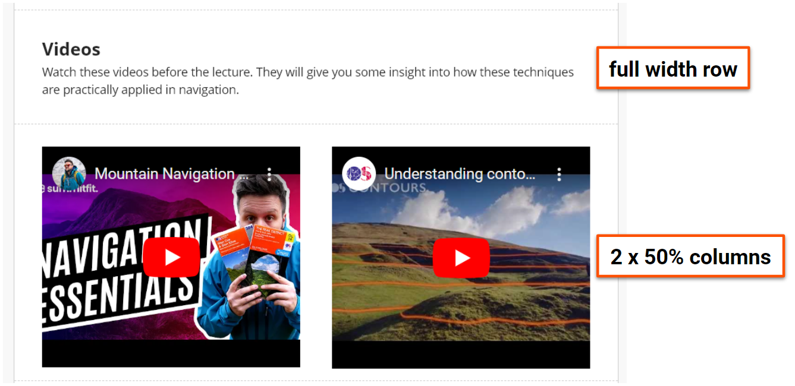
Tip
- Blocks are created in a new row, and then can be moved into a column in another row.
- Rows are always only one block high. This means that you can't add two smaller blocks stacked vertically alongside one larger one in the same row.
Layout with the AI Design Assistant
Using AI tools effectively
An AI-DA generated layout is a step in your content development, not a final product. Careful checking is always needed.
The AI Design Assistant (AI-DA) can generate more attractive layouts for Document content. It can:
- add relevant headings.
- split up text content and arrange blocks in nicer layouts.
- (optional) add AI-generated images or images from Unsplash.
- (optional) add a multiple choice knowledge check question.
Using AI-DA to apply Document layout
- Click the Magic/AI icon in the top bar.
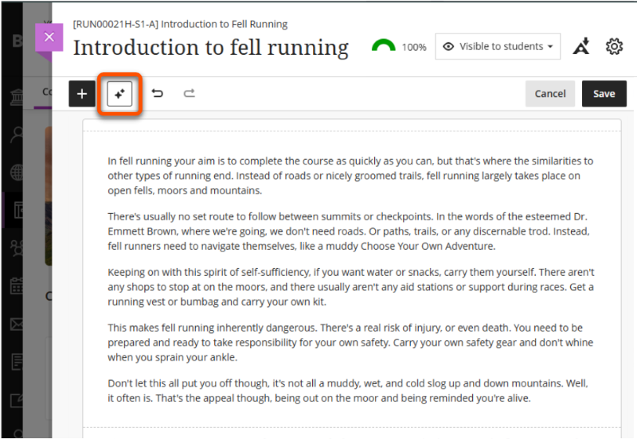
- On the Define the Layout page, select if you want to include images or the knowledge check. Click Generate if a layout hasn't already been generated.
- Review the generated layout and either click Apply layout to use it in the Document or click Generate for a new layout.
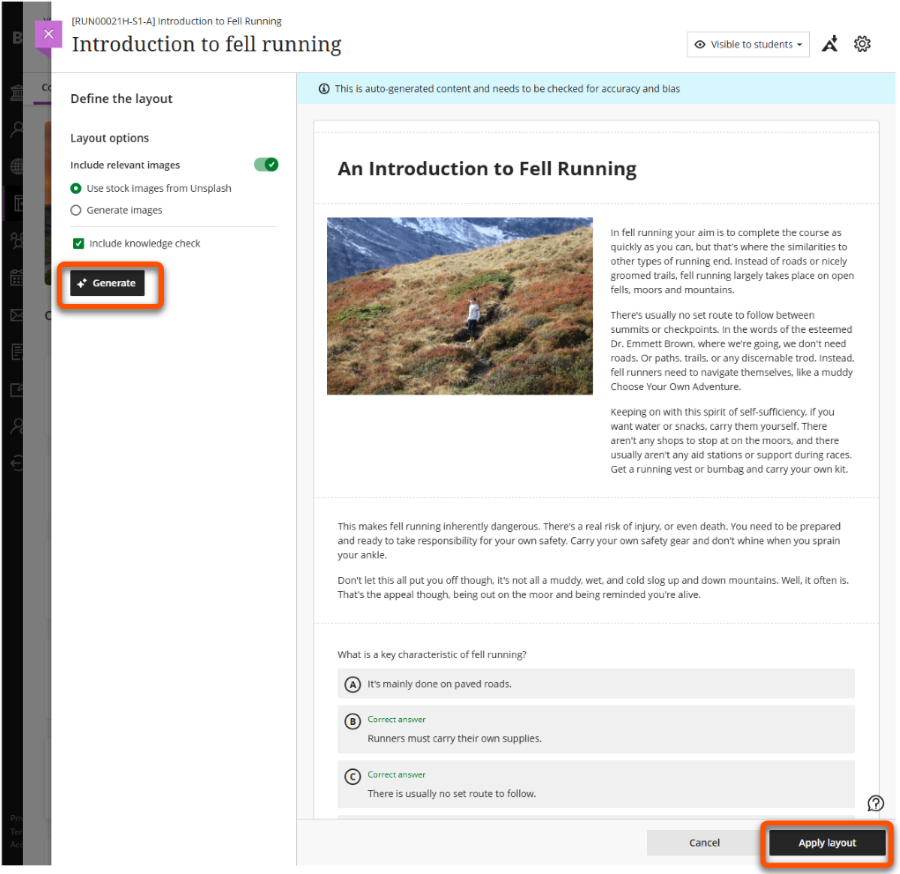
- Check and update the generated heading, image and knowledge check as needed, and make any adjustments needed to the layout.
- Click Save in the top bar.
Move a whole row
Hover over the row and either:
- hold the six dots icon to the left of the row to drag and drop to the desired location.
- click the six dots icon and select from options to move up or down.
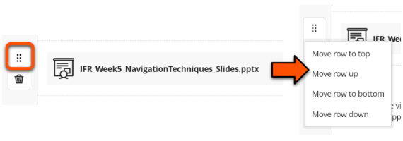
Create columns within a row
Hover over the block until the filled purple border and top icons appear and either:
- click the six dots icon at the top and choose the relevant size or location option.
- use the arrow icons on the left and right borders to resize and place the block within the columns.
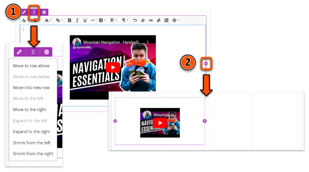
Move block into a column
Create the block in a new row, hover over it until the filled purple border and top icons appear and either:
- Click the six dots icon and choose the relevant size or location option.
- Hold the six dots icon at the top and drag and drop into the desired position
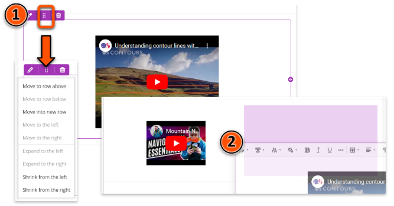
Print and download
There are two methods to print and download a Document:
- Print button: save the Document as a PDF or print out.
- Ally 'A' icon: download the Document (or files uploaded within it) in a range of alternative formats, such as MP3 audio. For more details, see our guide to the Ally alternative formats generator.
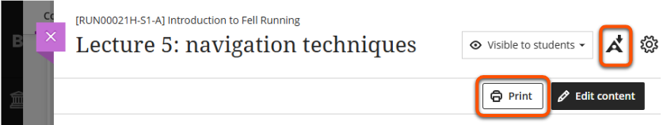